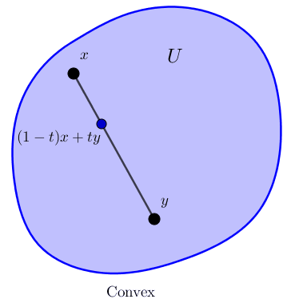

Summary Week 11
Definition: Let $X$ be a set together with the operations of addition, $+\, \colon X \times X \to X$, and multiplication, $\cdot \,\colon \R \times X \to X$, (we usually write $ax$ instead of $a \cdot x$). $X$ is called a vector space (or a real vector space) if the following conditions are satisfied:
Subvector spaces
Remark: If $X$ is a vector space, to check that a subset $S \subset X$ is a vector subspace, we only need
Definition: A mapping $A \colon X \to Y$ of vector spaces $X$ and $Y$ is linear (we also say $A$ is a linear transformation or a linear operator) if for all $a \in \R$ and all $x,y \in X$, \begin{equation*} A(a x) = a A(x), \qquad \text{and} \qquad A(x+y) = A(x)+A(y) . \end{equation*}
We usually write $Ax$ instead of $A(x)$ if $A$ is linear. If $A$ is one-to-one and onto, then we say $A$ is invertible, and we denote the inverse by $A^{-1}$. If $A \colon X \to X$ is linear, then we say $A$ is a linear operator on $X$.
We write $L(X,Y)$ for the set of all linear transformations from $X$ to $Y$, and just $L(X)$ for the set of linear operators on $X$. If $a \in \R$ and $A,B \in L(X,Y)$, define the transformations $aA$ and $A+B$ by \begin{equation*} (aA)(x) := aAx , \qquad (A+B)(x) := Ax + Bx . \end{equation*} If $A \in L(Y,Z)$ and $B \in L(X,Y)$, define the transformation $AB$ as the composition $A \circ B$, that is, \begin{equation*} ABx := A(Bx) . \end{equation*} Finally, denote by $I \in L(X)$ the identity: the linear operator such that $Ix = x$ for all $x$.
Theorem: If $A \in L(X,Y)$ is invertible, then $A^{-1}$ is linear.
Theorem: If $A \in L(X,Y)$ is linear, then it is completely determined by its values on a basis of $X$. Furthermore, if $B$ is a basis of $X$, then every function $\widetilde{A} \colon B \to Y$ extends to a linear function $A$ on $X$.
Theorem: If $X$ is a finite-dimensional vector space and $A \in L(X)$, then $A$ is one-to-one if and only if it is onto.
Theorem: If $X$ and $Y$ are finite-dimensional vector spaces, then $L(X,Y)$ is also finite-dimensional.
|
Definition: A subset $U$ of a vector space is convex if whenever $x,y \in U$, the line segment from $x$ to $y$ lies in $U$. That is, if the convex combination $(1-t)x+ty$ is in $U$ for all $t \in [0,1]$. Sometimes we write $[x,y]$ for this line segment. Theorem: Let $x \in \R^n$ and $r \ge 0$. The ball $B(x,r) \subset \R^n$ (using the standard metric on $\R^n$) is convex. |
 |
Definition: If $X$ is a vector space, then we say a function $\snorm{\cdot} \colon X \to \R$ is a norm if
A vector space equipped with a norm is called a normed vector space.
Euclidean norm
Definition: For two vectors if $x=(x_1,x_2,\ldots,x_n) \in \R^n$ and $y=(y_1,y_2,\ldots,y_n) \in \R^n$, the dot product is defined as \begin{equation*} x \cdot y := \sum_{j=1}^n x_j\, y_j . \end{equation*}
Definition: For $x=(x_1,x_2,\ldots,x_n) \in \R^n$, the euclidean norm is defined as \begin{equation*} \snorm{x} := \snorm{x}_{\R^n} := \sqrt{x \cdot x} = \sqrt{(x_1)^2+(x_2)^2 + \cdots + (x_n)^2}. \end{equation*}
Cauchy-Schwarz inequality
Theorem: Let $x, y \in \R^n$, then \begin{equation*} \sabs{x \cdot y} \leq \snorm{x} \, \snorm{y} = \sqrt{x\cdot x}\, \sqrt{y\cdot y}, \end{equation*} with equality if and only if $x = \lambda y$ or $y = \lambda x$ for some $\lambda \in \R$.
Operator norm
Definition: Let $A \in L(X,Y)$. Define \begin{equation*} \snorm{A} := \sup \bigl\{ \snorm{Ax} : x \in X \text{ with } \snorm{x} = 1 \bigr\} . \end{equation*} The number $\snorm{A}$ (possibly $\infty$) is called the operator norm. In particular, the norm operator is a norm for finite-dimensional spaces. When it is necessary to emphasize which norm we are talking about, we may write it as $\snorm{A}_{L(X,Y)}$.
Operator norm
Theorem: Let $X$ and $Y$ be normed vector spaces. Suppose that $X$ is finite-dimensional. If $A \in L(X,Y)$, then $\snorm{A} \lt \infty$, and $A$ is uniformly continuous (Lipschitz with constant $\snorm{A}$).
Theorem: Let $X$, $Y$, and $Z$ be finite-dimensional normed vector spaces.
Consider the vector space $M_{m\times n}$ consisting of all $m\times n$ matrices.
If $\{x_1,\ldots,x_n\}$ is a basis of $X$ and $\{y_1,\ldots,y_m\}$ is a basis of $Y$, then for each $A\in L(X,Y)$, we have a matrix $\mathcal M(A)\in M_{m\times n}$. In other words, once bases have been fixed for $X$ and $Y$, $\mathcal M$ becomes a linear mapping from $L(X,Y)$ to $M_{m\times n}$.
Moreover $\mathcal M$ is a one-to-one correspondence between $L(X,Y)$ and $M_{m\times n}$.
Definition: Let $S_n$ be the set of all permutations on $n$ elements. Let $A= [a_{i,j}]$ be a square $n$-by-$n$ matrix. Define the determinant of $A$ \begin{equation*} \det(A) := \sum_{\sigma \in S_n} \operatorname{sgn} (\sigma) \prod_{i=1}^n a_{i,\sigma_i} . \end{equation*} where \begin{equation} \label{eq:sgndef} \operatorname{sgn}(\sigma) = \operatorname{sgn}(\sigma_1,\ldots,\sigma_n) := \prod_{p \lt q} \operatorname{sgn}(\sigma_q-\sigma_p) . \end{equation}
Remark: The determinant is number assigned to square matrices that measures how the corresponding linear mapping stretches the space. In particular, this number, can be used to test for invertibility of a matrix.
Some important facts about determinants: